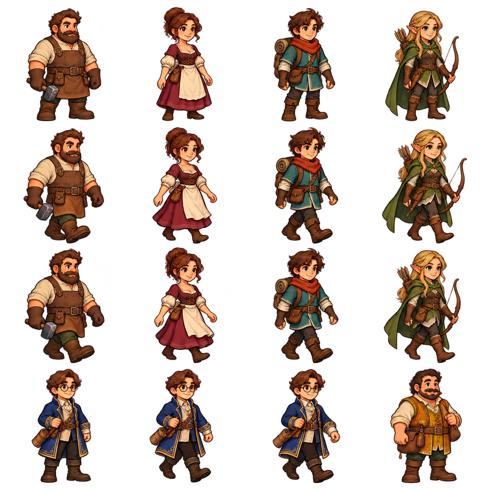
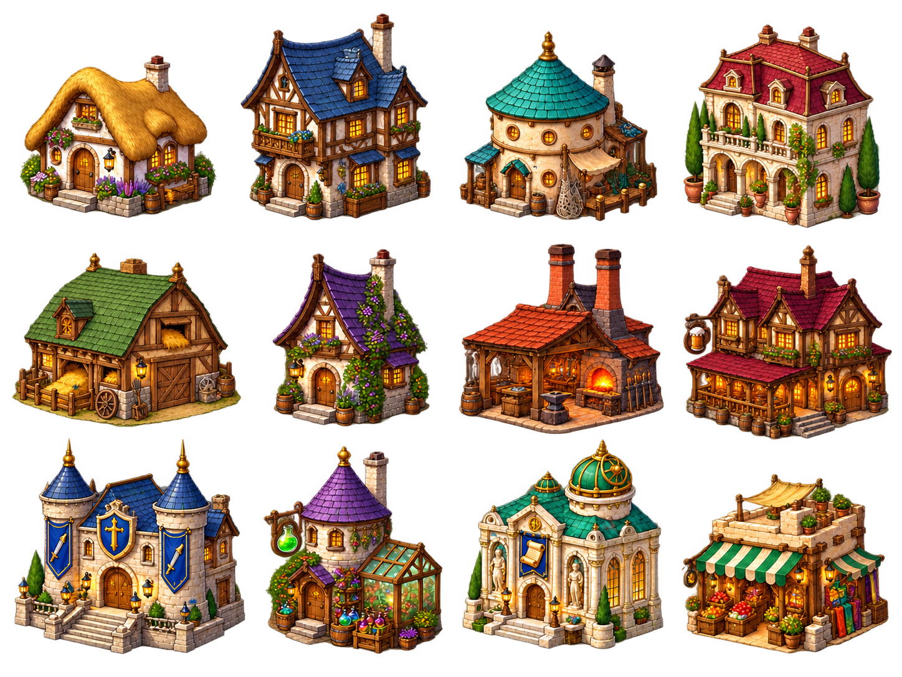
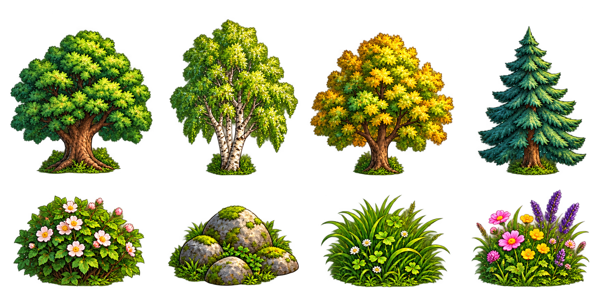
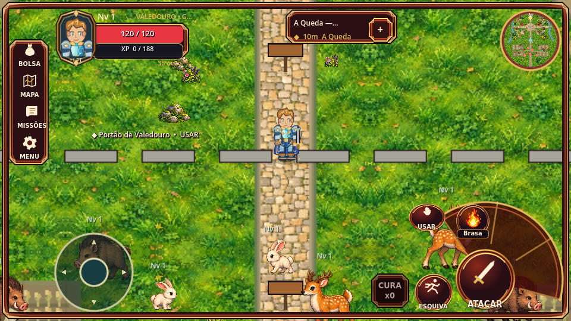
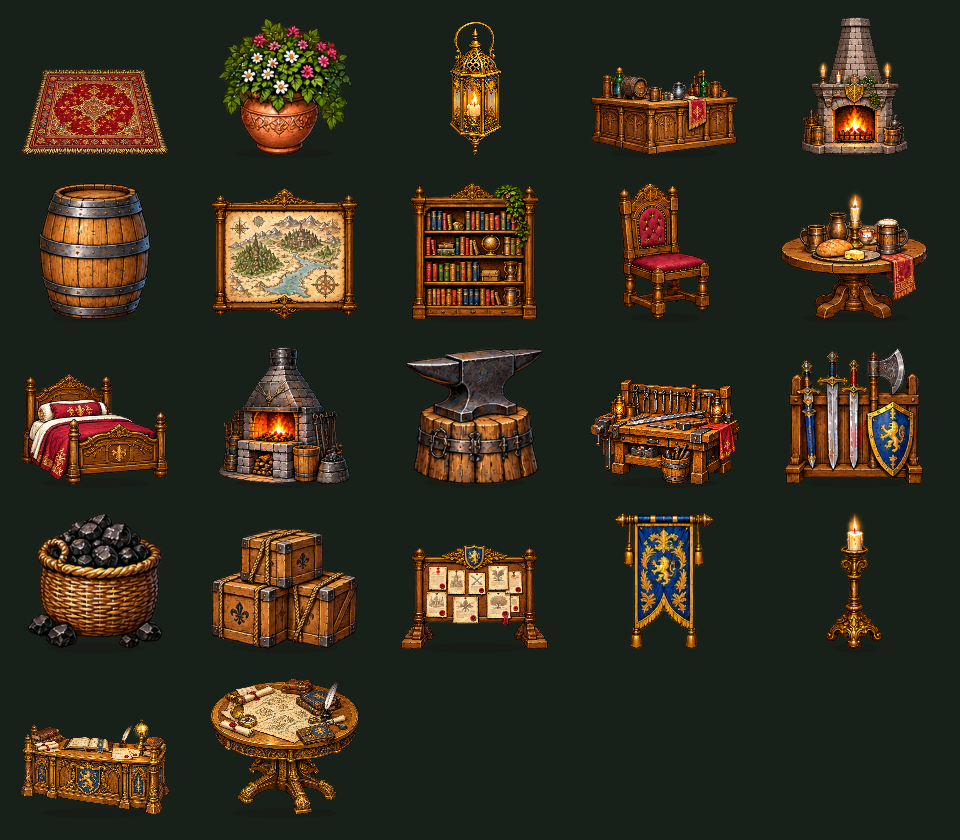

Originais preservados, proporções naturais e capturas do Godot 4.6.3. Os estados forçados são diagnósticos, não uma partida. Nenhum APK.
Diferenças encontradas, correções, testes e limites


Exibida em pixels naturais quando há espaço; zoom150 pode cortar móveis pelo enquadramento. Galeria permite verificar a forma completa.

